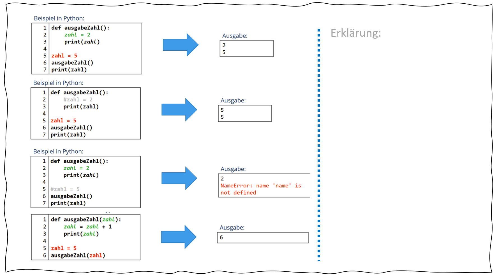

Wenn zwei Funktionen jeweils eine Variable summe benutzen, stören sie sich dann gegenseitig? Die Antwort liefert der Gültigkeitsbereich (engl. scope) einer Variablen.
Lokale Variablen
Lokale Variablen entstehen, wenn einem Namen innerhalb einer Funktion ein Wert zugewiesen wird (auch Parameter sind lokal). Sie existieren nur während des Funktionsaufrufs und sind nur innerhalb dieser Funktion zugänglich.
Globale Variablen
Globale Variablen entstehen durch eine Zuweisung außerhalb aller Funktionen, also auf der obersten Ebene des Programms (Modulebene). Sie können überall im Programm gelesen werden.
Beispiele
Beispiel 1 einfach
Ausgangssituation: Variablen aus if und for gelten auch danach
for i in range(3):
quadrat = i * i
if quadrat > 0:
meldung = "positiv"
print(i, quadrat, meldung) # 2 4 positiv – kein eigener Gültigkeitsbereich
Schleife: i nimmt nacheinander 0, 1, 2 an, quadrat wird 0, 1, 4. Warum gibt es die Namen danach noch? Eine Schleife bildet in Python keinen eigenen Gültigkeitsbereich. i und quadrat behalten ihren letzten Wert.
Verzweigung: 4 > 0 ist wahr, also entsteht meldung im if-Block – ebenfalls auf der obersten Ebene.
Ausgabe:2 4 positiv.
Falle: Eine Variable existiert erst, wenn die Zuweisung tatsächlich ausgeführt wurde. Läuft die Schleife gar nicht oder ist die Bedingung falsch, fehlt der Name.
Ergebnis: Variablen, die in for- oder if-Blöcken entstehen, sind danach im selben Bereich gültig – aber nur, wenn der Block ausgeführt wurde.
Eingabe (Schleife)
erwartete Ausgabe
Bemerkung
range(3)
2 4 positiv
Normalfall
range(1)
NameError: name 'meldung' is not defined
quadrat = 0, die Bedingung ist falsch, meldung entsteht nie
range(0)
NameError: name 'quadrat' is not defined
Schleife läuft nicht; der Fehler tritt schon in der if-Zeile auf
Beispiel 2 komplex
Ausgangssituation: lokale, globale und mit global gekennzeichnete Variablen
global_var_1 = 5
global_var_2 = 10
def irgendeine_funktion():
local_var = 5
global global_var_1 # global_var_1 soll die globale Variable sein
global_var_1 = "neuer Wert" # verändert die globale Variable
global_var_2 = "neuer Wert" # erzeugt eine NEUE lokale Variable
irgendeine_funktion()
# print(local_var) <-- würde einen NameError auslösen
print("global_var_1:", global_var_1) # global_var_1: neuer Wert
print("global_var_2:", global_var_2) # global_var_2: 10
Modulebene:global_var_1 und global_var_2 werden außerhalb jeder Funktion zugewiesen. Sie sind also global.
Python entscheidet vor dem Ausführen: Beim Übersetzen der Funktion sieht Python die Zuweisungen an local_var und global_var_2. Beide Namen gelten deshalb in der ganzen Funktion als lokal. global_var_1 ist durch global ausdrücklich ausgenommen.
Aufruf:local_var entsteht im Speicherbereich des Aufrufs. global_var_1 wird global auf „neuer Wert“ gesetzt. Eine lokaleglobal_var_2 erhält „neuer Wert“, die globale bleibt 10.
Nach dem Aufruf: Der lokale Bereich wird aufgelöst. local_var und die lokale global_var_2 gibt es nicht mehr.
Suchreihenfolge beim Lesen: Wird ein Name nur gelesen, sucht Python zuerst lokal, dann global, zuletzt bei den eingebauten Namen wie print oder len.
Ergebnis:global_var_1: neuer Wert und global_var_2: 10.
Funktionen, die globale Variablen verändern, sind schwer zu testen und zu verstehen, weil ihr Verhalten vom Rest des Programms abhängt. Besser: Werte als Parameter übergeben und mit return zurückgeben.
Praxisbezug: Gültigkeitsbereiche im Team
Alltag: Eine Notiz auf deinem eigenen Block (lokal) sieht nur du; eine Nachricht an der Pinnwand im Flur (global) können alle lesen – und im schlimmsten Fall überschreiben.
Beruf: In großen Projekten mit vielen Entwicklerinnen und Entwicklern sind globale Variablen oft durch Programmierrichtlinien verboten oder auf Konstanten beschränkt (z. B. MAX_SPIELER = 4). Werkzeuge zur statischen Code-Analyse wie Pylint melden Zuweisungen an globale Variablen automatisch als Warnung.
Das Wichtigste
Eine lokale Variable ist nur innerhalb der Funktion sichtbar, in der ihr ein Wert zugewiesen wurde. In Python bilden nur Funktionen (sowie Klassen und Module) einen eigenen Gültigkeitsbereich – if-Blöcke und Schleifen dagegen nicht.
Eine globale Variable ist im gesamten Programm lesbar. Soll eine Funktion ihr einen neuen Wert zuweisen, muss sie in der Funktion mit global name gekennzeichnet werden. Ohne diese Angabe erzeugt eine Zuweisung in der Funktion eine neue lokale Variable gleichen Namens.
Grundaufgaben
Aufgabe 2.1.7.1: Ausgaben erklären AFB II
In der folgenden Abbildung siehst du Codebeispiele und ihre Ausgaben. Analysiere den Code. Markiere lokale und globale Variablen und erkläre die Ausgaben.

Abb. 1: Codebeispiele zu lokalen und globalen Variablen